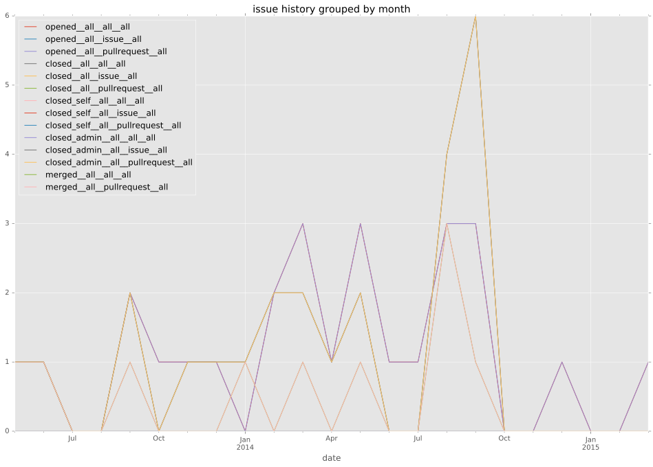

total issue counts
bugfix pull request: 14
feature pull request: 10
pullrequest: 26
docs pull request: 1
new plugin: 1
issue history

days open by issue type
feature pull request
count: 13
std: 41.8287105424
min: 0
max: 147
median: 5.0
mean: 26.1538461538
all
count: 37
std: 69.0313068203
min: 0
max: 385
median: 4.0
mean: 28.8918918919
pullrequest
count: 0
std: nan
min: nan
max: nan
median: nan
mean: nan
docs pull request
count: 2
std: 0.0
min: 101
max: 101
median: 101.0
mean: 101.0
bugfix pull request
count: 20
std: 85.6378390297
min: 0
max: 385
median: 1.0
mean: 23.05
new plugin
count: 2
std: 0.0
min: 33
max: 33
median: 33.0
mean: 33.0
closures grouped by total days open